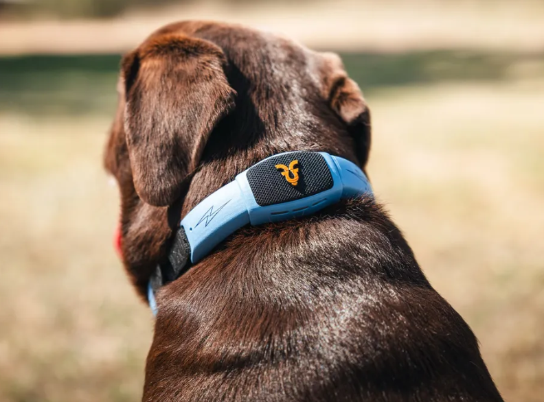

A talking pet collar. Yes, like UP.
Ever since Pixar’s UP came out in 2009, people have wanted one thing: a collar that lets their dog talk. The Shazam Band set out to finally deliver on that fantasy. It’s an AI-powered collar with sensors, speakers, and optional GPS that lets you talk to your pet and hear a human voice respond — effectively turning your dog into a conversational participant in your household. It’s charming, unsettling, and very much a product of the era where everything eventually gets a microphone.
After watching multiple demos, the experience becomes clearer: this doesn’t feel like your dog telling you what it truly thinks or feels. It feels like ChatGPT strapped to a dog. The collar responds sensibly, emotionally, even humorously — but only after you speak first. You’re essentially prompting the dog, and the AI generates a reasonable response based on tone, context, and behavior. What it doesn’t do is let your dog run up to you and announce something unprompted. There’s no “I’m hurt,” no “I’m scared,” no spontaneous communication — just a very polite, very reactive conversational layer.
That doesn’t make it useless — just important to understand. As a fun novelty, it’s impressive. As a translation layer for actual canine thoughts, it’s more performance than perception. The Shazam Band was offered in two versions (a $495 base model and a $595 GPS-enabled version), but it is currently no longer available. Whether it was ahead of its time or simply too weird for the market is still up for debate. Either way, it answers a very specific question humanity keeps asking: not “can dogs talk?” — but “what happens when we really, really want them to?”
Example videos:
youtube.com/watch?v=yYQldTvBFMQ
youtube.com/shorts/j3GnG8QxW8U